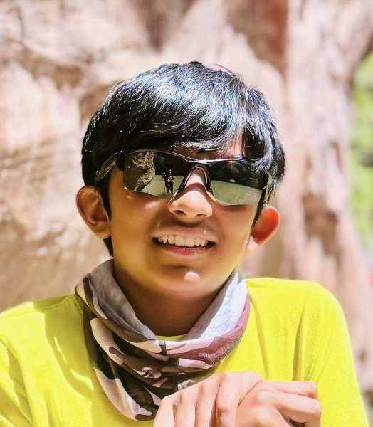
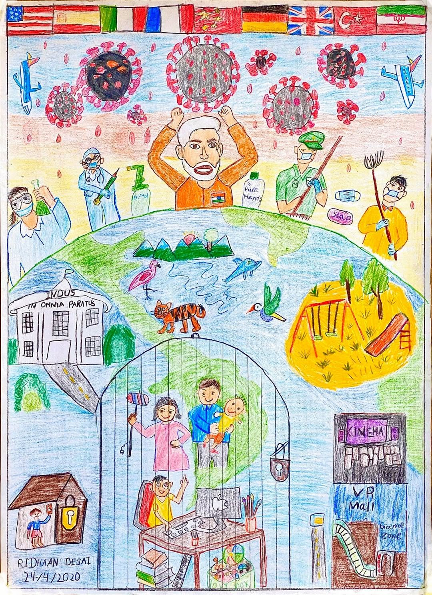
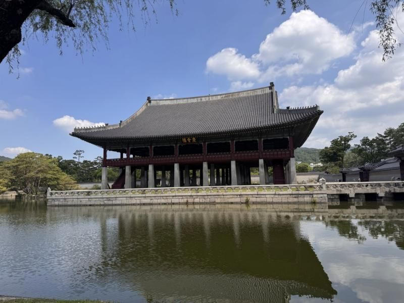
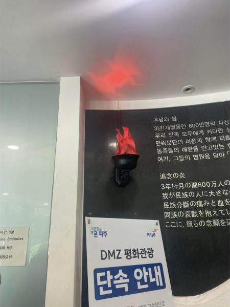
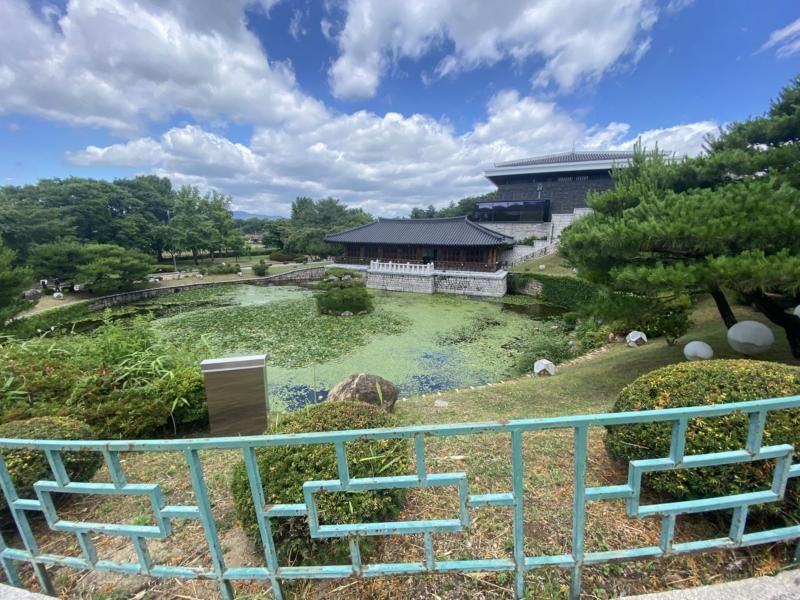
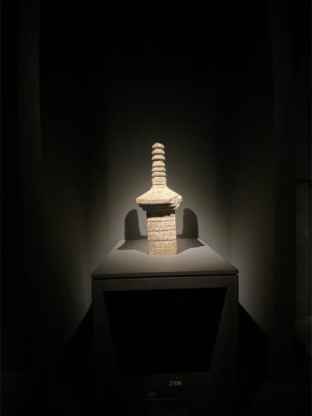
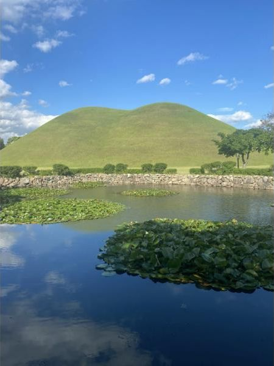
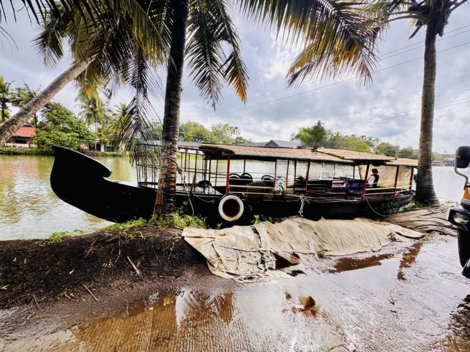
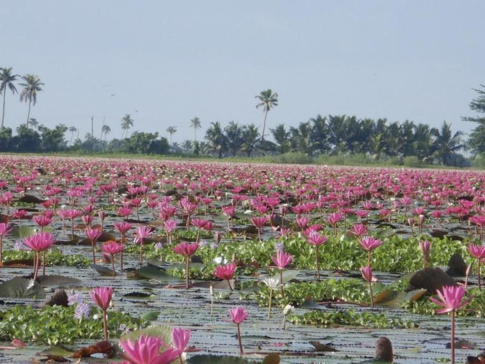
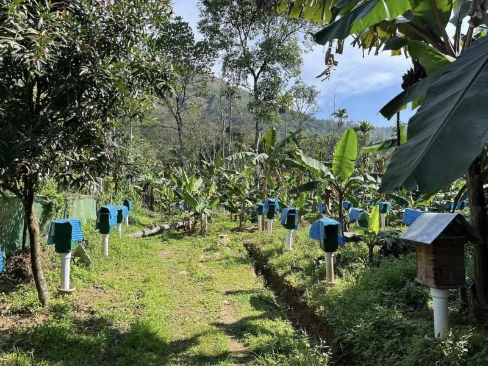

Neurons, knife skills and shutter speeds. I'm Ridhaan Desai, a high school student fascinated by how the brain turns electrical signals into thoughts, and how living systems keep themselves running. Most of my free time goes into watching and playing basketball, cooking, reading, and photography.

research & projects
Research & Projects
What I'm investigating, and the things I'm building.
Designing and building a gravity-powered vehicle with an international team.
2025's challenge brought together over 300 teams in our age group to design and build gravity-powered vehicles. The event involved several rigorous components, including an Engineering Journal submission, an in-depth team interview, a live time-bound track run with the final prototype, and a post-run reflection interview. Our team performed with exceptional confidence at every stage.
Our project was the result of a long-term commitment, beginning in August last year. As an international team spanning the Bay Area, USA, and Bangalore, India, we engaged in extensive scientific research, applied the design engineering process, developed and tested multiple prototypes, and authored a comprehensive engineering journal. What truly stood out was our dedication, teamwork, and problem-solving mindset. We navigated time zone differences by consistently meeting during weekend nights and early mornings, demonstrating outstanding initiative, time management, and collaboration across geographies.
Engineering, art, origami and food, plus the work I do for the environment.
Climate Action
Tikkun Olam
My effort to repair the world: cutting water waste and pollution, and planting trees with Our City Forest.
Art
Art Studio
Drawings, paintings and sculpture, including two hearts for Hearts in San Francisco.
Paper
Origami & Paper
Folded bookmarks, cards and paper projects.
Food
Kitchen
Recent cooking and baking projects.

Painting · Grade 1 · April 2020
Corona Virus Can't Reach My Home
Selected by the International Museum of Children's Art in Oslo, Norway, and by ICCR (Indian Council for Cultural Relations), India.
What I wrote about my painting
“Corona virus is traveling from different countries to India by airplane. It cannot reach to my locked caged home because all the protectors like PM Modi, doctors, police, scientists and workers are fighting with the virus with their weapons like leadership, vaccine, stick and sweeper. I am very happy to spend more time with my family. I also feel happy for the birds and animals being free in nature. I have my school classes and play dates online. At home, I read books, write stories, play Lego, paint, exercise, enjoy music, dance and movies. I cannot go to my favorite places like my school, my friends’ house, playground, nature walks, family trips, and game zone. I really wish Corona Virus goes away soon and I can play like before.”
California Drought: 8-year-old 'Lawnbuster' is changing the world one yard at a time
A report by Kiet Do on my volunteering with Lawnbusters, an Our City Forest program that swaps thirsty lawns for drought-tolerant gardens for seniors, veterans and low-income families. The story was also picked up by KTVZ and KESQ.
3rd grader's artwork a winner in Hearts in San Francisco project
Coverage of my heart "Corona Circus," which made me the youngest artist chosen for the Hearts in San Francisco fundraiser for San Francisco General Hospital.
Golden State Warriors get their NBA Championship Bling
KPIX coverage of the Warriors' championship ring night. From 1:35, the Warriors recognize me as their youngest Impact Warrior.
recognition
International Museum of Children's Art, Oslo, NorwayMy Grade 1 painting "Corona Virus Can't Reach My Home" was added to the museum's online gallery.View gallery ↗
ICCR (Indian Council for Cultural Relations), IndiaThe same painting was selected by ICCR.See the painting →
A school history trip from the malls of Seoul to the DMZ and the ancient Silla capital of Gyeongju.
Where
Seoul, the DMZ and Gyeongju, South Korea
Trip
School history trip
Highlights
Gyeongbokgung Palace in hanbok, the DMZ's 3rd tunnel, Bulguksa Temple
Food to try
Hot pot
South Korea is a great place for family and friends both to spend time in. I visited South Korea with my school, for a history trip. While it may not look like the most historical place in the world, with vibrant shopping streets and glorious malls, it has some places that are rich in historical significance.
Starfield COEX Mall
The first part of the trip was a visit to the Starfield COEX mall. The entrance of the mall was a fairly large glass automatic door, which was followed by a set of two escalators that led downstairs into a huge, open indoor area. The center of this large area contained two or three tall, stretched, and angled faces. Huge walls lined the side of this area, and they were filled with books of various genres. Many different pathways extended from that area, stretching into a mall. They led to numerous stores and shops, selling skincare, coffee, ice cream, and a lot of other exciting goods. Adjacent to the mall, there was a golden Gangnam Style statue whose colours contrasted with those of the glass buildings which surrounded it.
Hot Pot
For dinner on a few days, we ate a hot pot meal. In this style of eating, each person gets a base broth and a pot. We put the broth into the pot and keep it on low heat. On the side, there is a conveyor belt, which carries various ingredients which we can boil in our broth. We can also adjust the temperature of the boil to make it slower or milder. I used instant ramen noodles to make a cheesy pork broth ramen with tteokbokki, cabbage, and fried chicken.
Turtle Ship Museum
Then we visited a turtle ship museum, which highlighted the Koreans’ secret weapon in the long Korean-Japanese wars. This special attack ship was used and developed by Admiral Yi Sun-Shin of the Joseon dynasty. It could repel attacks from above, which many ships were not able to do at the time, making it one of the first ever armoured ships. It was also able to outmanoeuvre ships due to its drag-reducing build and long oars, which required heavy manpower. Following that, we created our own turtle ships using kits.
Gyeongbokgung Palace
Next, we visited Gyeongbokgung Palace. We dressed in a traditional outfit called hanbok and walked to the palace. It featured a white shirt and dark pants, with an intricately or simply designed vest on top. It was also optional to wear a black hat with a permeable material, called a gat. The specific type that we wore is called a heukrip. As for the palace, the primary section was a large square, with guard ceremonies being performed in the centre from time to time. The second part of the palace was also a square, but this time with a smaller palace placed in the center. There was also a palace museum on the periphery, which talks about the rich Joseon history of the palace.

Gyeongbokgung Palace
Seodaemun Prison History Hall
The next place we visited was Seodaemun Prison History Hall. This was a museum dedicated to highlighting the struggles of South Koreans who were oppressed by the Japanese during colonisation. It was a former Japanese prison that became a South Korean prison after independence due to the poor economy. The quarters were originally a hexagonal chamber which branched out into six other halls with rooms to house prisoners. The first displays showed numerous methods of torture and portrayed the difficulties of Korean prisoners. They could not even talk to each other, so in the case of an emergency, there was a switch which they flipped from inside that made a stick protrude outside. This alerted others without direct communication and talking.
Hongdae Street
In the evening, we went to Hongdae street. It was buzzing with activity in the late evening, and there were many shops featuring clothing, skincare, souvenirs, and more. There was a wide range of ages, from young graduates to adults in their 50s.
The DMZ
The next stop was the DMZ. The demilitarised zone is an area between the borders, along the 38th parallel. Nature thrives here, and there are many villages too. There were tunnels dug by North Koreans to invade South Korea; four have been discovered so far, which North Korea claims they used to mine coal. We walked in the 3rd tunnel and glimpsed a spot where the mining was stopped. The ceiling was fairly low, and for some stretches you had to crouch to walk. Then we went to Dora Observatory, a place where we could see North Korea. First, we viewed North Korea from a building on high ground with one side made of glass. There was a three-dimensional map which we could refer to while looking out.
On the top floor, there was a large balcony with binoculars, used to see the other side, where we saw tanks, football courts, and towns.

At the DMZ
War Memorial of Korea
The War Memorial of Korea features a circle of flags and an enormous building set within its main expanse. Inside, numerous exhibits highlight the weaponry, leaders, and struggles of the war, including a large, high-roofed room that holds life-size models of planes, tanks, and trucks. Among the displays are exhibits about the armistice signed by the Korean People's Army, the Chinese People's Volunteer Army, and the UN Command, the Korean Armistice Agreement, which ended a great deal of tragedy and saved thousands of lives.
Bulguksa Temple
Bulguksa Temple, a UNESCO World Heritage Site, stands as a representation of Buddhist culture from the Silla dynasty of the Korean Peninsula. The grounds featured shaded walks with many beautiful ponds and waterfalls, while the main temples held two pagodas, one to represent Buddha and the other to represent Buddhist values and the life of Buddha. The temple is part of Gyeongju, the ancient capital of Silla, the kingdom that conquered Baekje and Goguryeo to form Unified Silla and bring the entire Korean Peninsula under a single rule.

Gyeongju
Gyeongju National Museum
The Gyeongju National Museum displayed Buddhist Silla artwork throughout its grounds. One of the main exhibits was a bell with an ancient story, said to make the sound "ye-me-le" when struck. Much of the Buddhist artwork was presented in futuristic displays, with dark rooms and white light shining on pots, statues, tools, and more. One statue I remember was a cube featuring the four protectors of Buddha, accompanied by a separate display explaining each side of the cube and what each protector portrayed, with the four figures representing the four directions: north, south, east, and west. The museum was a complex hosting many different buildings, each with something different to offer, including one dedicated to the gold artifacts of the Silla dynasty.

Gyeongju National Museum
Daereungwon Tomb Complex
The Daereungwon Tomb Complex was a unique burial site where artifacts lay buried beneath large, smooth, green hills. The tomb on display had a grey stone gateway on the outside that led to a chamber within, where a rectangular glass display held tools, jewellery, and more. The passageway behind it hosted other Silla exhibits, such as the horse exhibit, which displayed the ornaments and armour a horse would wear into combat. Another of the exhibits showed the clothes of a king, offering a glimpse of what a king would have worn.

Daereungwon Tomb Complex
Donggung Palace and Wolji Pond
Donggung Palace and Wolji Pond form a fantastic pairing of ancient architecture and nature. Wolji Pond is a large body of water with three islands, offering a great hike around its edges and plenty of wildlife along the way, as well as lotus-themed solar panels. The palace was a wonderful sight, standing a single storey tall unlike the other palace I had seen, and it taught me a great deal about Silla architecture.
Conclusion
This trip was my first international school trip, and it lived up to my expectations, with a mix of modern and ancient experiences. I was amazed that the Korean alphabet, Hangul, was made with no outside help. Its simplicity makes it easy for anyone to learn. I was also inspired by the courage of the Korean soldiers against Japan in the Battle of Myeongnyang, where 13 Korean ships faced 133 Japanese ships. The Koreans were led by the legendary Admiral Yi Sun-Shin. I would recommend South Korea to travellers of all ages.
Backwaters and water lilies in Kumarakom, then spice farms, martial arts and honey bees in Thekkady.
Where
Kumarakom and Thekkady, Kerala, India
Stayed at
Gokulam Grand Resort, Spice Village CGH Earth
Highlights
Shikara boat ride, the water lily field, Kathakali, the honey bee farm
Good for
Families and solo travelers
Kerala is a vibrant and beautiful state, with many cities unique in their own way. I am going to cover two of them: Kumarakom and Thekkady.
Kumarakom
Kumarakom is known for having the biggest lake in Kerala, Lake Vembanad, 785 mi². Kerala's biggest river, the Periyar, also reaches Kumarakom; it starts from Thekkady and ends in Kumarakom, 152 miles long.
Shikara Boat
The lake provides many thrilling and relaxing experiences, such as shikara boating and house boating. Unfortunately, due to a lack of time I could not go house boating, but I could do shikara boating. A shikara boat is a roofed boat, usually with comfortable chairs and sometimes mattresses inside, and they are from 15 to 30 feet long. The rides are about 3 to 4 hours long, with activities in between, like fishing, local ways to make objects, and coconut tapping, a way of extracting a drink from coconuts called toddy. If it rains, there are tarps on the side of the boat to cover the sides so you don't get wet.

A shikara boat on the backwaters
Water Lilies
There is also another noteworthy but lesser-known experience, the water lily garden. You start with a car ride to a canal, and that canal leads you to a huge expanse covered in pink water lilies as far as the eye can see. You go into the field in a small boat with someone to paddle it. There are also other flowers there, like white water lilies. The paddler also pulls lilies from the water and makes creative necklaces out of them. The ride is 30 to 45 minutes, and after it, you go back to the same boat you came from.

The water lily field
Gokulam Grand Resort
Gokulam Grand is a backwater resort with great service, food, and views. It features a man-made lagoon, where you can do many activities such as fishing, paddle boating, kayaking, and canoeing. There is also a game zone with a table tennis table, a foosball table, a pool table, a pair of chess boards and a pair of carrom tables. It has 52 well-maintained rooms and 17 luxury cottages to stay in. Some of the rooms have a swimming pool right outside, for the guests' convenience. The restaurant has an à la carte menu and a buffet service for breakfast, lunch, and dinner, with authentic local food as well as continental items. Their room service is very reliable, always delivering food or towels on time. In conclusion, Gokulam Grand Kumarakom is a stunning, neat, and fun place to stay while you are there.
Thekkady
Thekkady is known for the Periyar Tiger Reserve, its many spice plantations and its location in the mountains, with many types of flora and fauna.
Spice Plantation
Green Valley is a spice plantation in Thekkady that grows Ayurvedic medicine and sells it too. In the plantation, the guide walked us through the garden and showed us many different spices and medicines, like cardamom, vanilla, brahmi, ashwagandha, and neem. At the end of the tour we also got to see the medicines in their final forms and buy them, along with some spices grown on the farm.
Kalaripayattu
Kalaripayattu is a Keralan form of martial arts that I watched in an arena right outside my resort. Many different types of metal weapons are used, like axes, swords, and shields. It is a thrilling experience unique to the area, with about 6 people taking part. There is sometimes audience participation too, where the performers jump over audience members. There is also a fiery surprise at the end.
Kathakali
Probably one of the most famous things about Kerala, Kathakali is a dance form which tells stories through expressions without words. The show was in the same place as the Kalaripayattu. There are two dancers, and first they show all their expressions and what they mean, and then they begin a performance. It surely lived up to its reputation.
Honey Bee Farm
Phillips Honey Bee Farm is a family-owned farm built from scratch that has won national awards. The guide was very polite and explained the process very well, showing us the layers of each hive hands-on. We also got to hold a layer covered in honey bees, which was surely an experience I will never get again. At the end we got to try the different types of honey and buy bottles of it too.

Phillips Honey Bee Farm
Spice Village CGH Earth
Spice Village was a resort immersed in nature, surrounded by trees and wildlife everywhere. The rooms are cottages with no AC, but they are built so that the wind circulates inside to keep you cool. The food and the restaurant are spot on, serving local food as well as continental. There was also a snacks and tea period in the afternoon. There is a special Tiger Club with wildlife specialists for any wildlife enthusiasts. Monkeys, especially Nilgiri langurs and bonnet macaques, pay visits to the trees and the roofs. There is a traditional Ayurvedic spa and basketball, badminton, tennis and table tennis courts.
Conclusion
In summary, Kerala is a great place to visit with your family or on your own, because the food there is amazing, the sights around Kerala are breathtaking, and it's a good place to unwind. For adventurers there is also a tiger reserve. So next time you are wondering where to go when you are travelling in India, Kerala is always a great option.
Tigers, a leopard, wild dogs and the teak forests of one of India's best-known tiger reserves.
Where
Tadoba-Andhari Tiger Reserve, Chandrapur district, Maharashtra, India
Trip
Wildlife safari
Highlights
Collarwali and her cubs, Yuvraj, a leopard, Indian wild dogs
Good for
Anyone who loves wildlife
Collarwali with her cubs
Tadoba-Andhari Tiger Reserve is in the Chandrapur district of Maharashtra, and it is one of the best places in India to see a tiger in the wild. The forest is dry and deciduous, made up mostly of teak, with bamboo thickets and open meadows around lakes. The park gets its name from Taru, a Gond chief who, according to local legend, was killed by a tiger, and the Gond people still worship him today. The reserve is divided into a core zone, which is the heart of the park, and a buffer zone that surrounds it, and safaris enter through different gates around the forest.
What makes Tadoba special is how many tigers live there. Because so many tigers share the same forest, the males often compete for territory, and the guides know almost every tiger by its name and family. On my safaris, I saw more tigers than I ever expected, and each one had its own story. Between the tiger sightings, the meadows were full of spotted deer, sambar and wild boar, so there was always something to watch. I would recommend Tadoba to anyone who loves wildlife and wants to see tigers in their natural home.
The Tigers I Saw
Collarwali and her cubs
Not to be confused with the famous Collarwali of Pench, this Collarwali is a tigress of Tadoba's buffer zone around Moharli. Her name comes from a radio collar she wore during an earlier study. When I saw her, she had her cubs with her.
Yuvraj
A male tiger of Tadoba's core zone, and one of the tigers visitors most hope to see.
Bijli's son
A young male who is still too young to have his own name. His mother, Bijli, is a tigress whose territory is around Jamni Lake in the core zone.
An unnamed male
Another male tiger whose name I don't know.
The Leopard
Tadoba isn't only about tigers. Leopards live here too, and the core and buffer areas are estimated to be home to about 151 of them. Leopards are shy and usually stay hidden in the trees and bushes, so seeing one is a lucky moment. Tadoba has even had sightings of rare black leopards in recent years.
The Indian Wild Dogs (Dholes)
We also saw Indian wild dogs, which are called dholes. At first glance, they look a bit like foxes, with reddish-brown coats, white chests and long bushy tails, but they are a completely different species from the dogs people keep at home. A dhole is about the size of a border collie and weighs around 12 to 20 kilograms. The two we saw were sitting in the dry grass, both staring at something in the distance.
Two dholes watching from the grass
Dholes live and hunt in packs. In India, packs tend to be smaller, around six dogs, where there are many tigers, and larger, around 17 dogs, where there are fewer. By working together, a pack can bring down prey like sambar deer, which can be ten times heavier than a single dhole, and most of what they eat is chital and sambar. Each pack is led by an alpha male and female, while the other members help with hunting and raising the pups.
One of the most interesting things about dholes is how they talk to each other. They are sometimes called whistling dogs, because they use a low whistle to find each other in thick forest, and each dog's whistle is so distinct that it can be used to tell them apart. Sadly, dholes are listed as Endangered, with only about 4,500 to 10,500 left in the world. Seeing them in Tadoba was a rare and lucky moment, maybe even rarer than seeing a tiger.
The teak and bamboo forests of Madhya Pradesh that inspired The Jungle Book.
Where
Pench Tiger Reserve, Seoni and Chhindwara districts, Madhya Pradesh, India
Trip
Wildlife safari
Known for
Tigers, The Jungle Book, the tigress Collarwali
Good for
Wildlife lovers and Jungle Book fans
Highlights
Young tigers, a leopard, peacocks, hornbills and kingfishers
Two young tigers resting in the shade
Pench Tiger Reserve sits on the southern slopes of the Satpura hills in Madhya Pradesh, spread across the Seoni and Chhindwara districts, right next to the Maharashtra border. The park is named after the Pench River, which flows from north to south through the middle of the forest and splits it into two halves. Near the southern edge, the Meghdoot dam at Totladoh holds back the river and forms a huge lake. The forest is a mix of dry and moist deciduous trees, with teak, bamboo and open meadows, and safaris enter through the Turia, Karmajhiri and Jamtara gates.
Pench is famous for another reason too: it is the area Rudyard Kipling wrote about in The Jungle Book, even though he never visited it himself. The Seoni hills, the Wainganga River and the valley where Sher Khan meets his end are real places in this district, and part of the reserve is even called the Pench Mowgli Sanctuary. Pench became a national park in 1983 and a tiger reserve in 1992. Along with tigers, the forest is home to leopards, wild dogs, sloth bears, gaur, sambar, chital and nilgai, and more than 325 species of birds. I would recommend Pench to anyone who loves wildlife, and especially to anyone who grew up with The Jungle Book.
Pench's Most Famous Tigress
Pench was home to Collarwali, one of the most famous tigresses in India, and not the same Collarwali I saw in Tadoba. She got her name because she was the first tiger in Pench to be fitted with a radio collar. Between 2008 and 2018, she gave birth to 29 cubs in eight litters, which earned her the nickname "Supermom." She died in January 2022 at around 17 years old, and many of the tigers in Pench today come from her family.
The Tigers
We saw young tigers resting in the shade of the forest. One of them sat up, yawned and looked around, while another kept watching us from behind the trees.
The Leopard
We also saw a leopard, first lying low in the dry grass and then on the move.
Birds
Pench has more than 325 species of birds. Here are some of the ones we saw.
Other Wildlife
A langur watching from a branch, a monitor lizard peeking out of a tree hole, and an elephant with its mahout in the morning mist.
Sal forests, wide meadows and the only hard-ground barasingha in the world.
Where
Kanha Tiger Reserve, Mandla and Balaghat districts, Madhya Pradesh, India
Trip
Wildlife safari
Known for
Tigers, the hard-ground barasingha, sal forests and meadows
Good for
Wildlife lovers and photographers
Highlights
A tiger, a herd of gaur, sambar deer, a crested serpent eagle
A tiger walking through the dry grass
Kanha Tiger Reserve is in the Maikal hills of the Satpura range, in the Mandla and Balaghat districts of Madhya Pradesh. It is the largest national park in the state. Most of the forest is made up of tall sal trees, mixed with bamboo and wide open grasslands called meadows, which are the best places to spot deer and the animals that hunt them. Safaris in the core of the park run through four zones: Kanha, Kisli, Mukki and Sarhi.
Kanha was first protected as a sanctuary in 1933, became a national park in 1955, and was one of the first tiger reserves in India when Project Tiger started in 1973. Like Pench, it is often linked to The Jungle Book, even though Rudyard Kipling never actually came here. The park is home to about 43 species of mammals and around 300 species of birds, including tigers, leopards, wild dogs, sloth bears, gaur and Indian pythons. I would recommend Kanha to anyone who wants to see a real Central Indian jungle, and especially to anyone who wants to see a barasingha.
The Hard-Ground Barasingha
Kanha is the only place in the world where the hard-ground barasingha, also called the swamp deer, lives in the wild. It is the state animal of Madhya Pradesh. Unlike the other kinds of barasingha in India, which live in marshy areas, this one has hard hooves that are made for firm ground in sal forests with grass underneath. By 1970, only 66 were left in Kanha. The park saved them by restoring grasslands and swamps, keeping cattle out to stop the spread of disease, and protecting the herds, and today there are more than a thousand. Some have even been moved to other parks, like Satpura, Van Vihar and Bandhavgarh, to start new herds. In 2017, Kanha became the first tiger reserve in India to get an official mascot: Bhoorsingh the Barasingha.
The Tiger
We saw a tiger walking through the forest, slipping between the sal trees and out across the dry grass.
Other Wildlife
A herd of gaur grazing under the sal trees, and sambar deer standing in the middle of the safari track.
Birds
A crested serpent eagle sitting on a dead branch, and a cormorant drying its wings by a pond.
Mornings and Evenings
The sun coming up over the meadows, and our camp under the moon at night.
reading blog
Reading
I love reading books of different genres, from history and memoirs to science fiction and self-help. Over the years, I have read many books and series, and each one has either taught me something new or taken me somewhere I have never been. Below are my reviews of three books that stayed with me: German Boy, the true story of a family escaping the end of World War II; Make Your Bed, a short book of life lessons from a Navy SEAL admiral; and The Martian, about an astronaut stranded on Mars who uses science to survive. I will keep adding more reviews as I finish new books.
“German Boy” by Wolfgang W. E. Samuel is an autobiography situated in 1945, depicting the scene in Eastern Germany through the lens of a child. Samuel, when he was ten, was residing in Eastern Germany with his mother and younger sister, and his father was serving away as a Luftwaffe officer. As the Soviets advanced east, the family joined millions of refugees fleeing west, often with no food or water, until they found themselves in a Soviet occupation zone. The book is about the loss, struggle, and hardships of the family as they fought to bring back what was. In the Soviet occupation zone, Samuel saw violence, looting, and oppression by Soviet officers on residents of the area. Over time, the mother broke down due to her workload, and Samuel had to cover for what was lost, doing chores, getting food, foraging, trading, and more work. This book is unique because it is viewed through the eyes of a child, who is more innocent and oblivious than an adult or a teenager. Writing through the perspective of a child prompts the reader to feel sympathetic for the child, because war isn’t the environment any child should grow up in, and here, Samuel grows up without a father figure for a lot of his life too. The book also speaks for the millions of other refugees across the world in World War Two, all suffering famine, drought, loss, and despair. So many other people across the world have experienced this struggle, and this book represents them too. Another theme of this book is growing up too fast. Samuel enters the book as a ten-year-old, has just barely scratched the surface of his life, and gets thrown into the turmoil and suffering of World War Two. To survive, he has to toughen up, fast. Throughout this book, he has to make impossible decisions and see things children should never see. At the end, there is a clear difference from the start: being an adult who takes care of his family and serving in the army. Just to note, not necessarily an adult of age, but an adolescent mindset. I would recommend this book to a teenager, not to a child, because of the gruesome language and the complex ideas. Anyone would learn a lot from this book, because it gives valuable insight into World War Two coming from someone who lived through it himself.
Make Your Bed, by Admiral William H. McRaven, is an inspirational book comprising ten lessons. These are life lessons which are derived from decades of SEAL experience, but are mainly based off of five years of basic Navy SEAL training. My biggest takeaway is actually the first lesson. The first lesson is to make your bed. This is, in my opinion, the most important one. It seems like nothing but a trivial task, but there is deep psychology behind it. If you finish your first task of your day, it gives you the confidence to finish all the others behind it. I integrated it into my life, and I find it to enhance the quality of all work that I do, and make it more efficient. I learnt you can always look at the made bed and feel proud of yourself, urging you to keep going forward in any task you are doing. This lesson doesn’t only need to apply to someone in the army; it can also apply to other professions or identities. One example is in a medical profession, like a neurosurgeon. Being a neurosurgeon takes a lot of willpower and energy, waking up in the morning or at night, continuously working 36-hour shifts, having long, tedious surgeries, all while knowing one mistake can kill your patient or end your career. The amount of pressure bearing down on your shoulders, along with the fatigue, can crumple any normal person. If the surgeon wakes up and makes their bed, that gives them a spark of accomplishment, which will build up into completing a long surgery, figuring out a complex solution to a problem, or even working out an argument with a boss. Admiral McRaven suggests that sometimes, all you need to have a successful day is to make your bed. Something unique about this book was that Admiral McRaven talked about these lessons in stories. Usually, when someone tells me a lesson, I acknowledge it and move on. I remember the lesson for a while, but the habit and memory eventually fade. In this book, he talked about his lessons through stories, which helped me remember a lot. It’s just like how, when learning Chinese, sometimes you get taught stories for some characters to help you remember them better. The technique of storytelling also prompts the reader to think in more complex ways and ask questions. I am now looking forward to reading his other books, like “The Wisdom of the Bullfrog”. In conclusion, this book was a great way for Admiral McRaven to compress his long experience in the military into ten useful, essential lessons.
The Martian, by Andy Weir, is a sci-fi fiction novel about a NASA astronaut named Mark Watney who got stranded on Mars during the Ares 3 mission. He had a team of six people, led by Melissa Lewis. When the team landed on Mars, they set up camp and studied samples for a while. Then, a furious dust storm hit, making them evacuate. During the storm, when Mark was going back to the ship, a piece of debris hit him, making it look like he had died, forcing the team to leave without him. Later, he wakes up and finds himself stranded on Mars. At the start, he pretty much gave up and accepted his fate, but it is interesting to see his train of thought throughout the story, how he slowly gets motivated to figure out a way to survive. This story is one of my favourite sci-fi novels, because it’s so realistic, based on actual science, yet some concepts are so absurd that no child in their wildest imagination could have thought of them. Mark Watney does things like make water out of rocket fuel, grow potatoes in Martian soil, and power rovers with nuclear material, not failing to amaze the reader every chapter. Something unique Andy Weir does in this novel is that he documents Mark Watney’s experiences through a log, which he writes in every day and records his experiences in. This allows the reader to see the world through his perspective, which helps change the mood of the text smoothly. For example, at the start, when Watney realised he was stranded on Mars without any help or support, he broke down and threw in the towel. This was portrayed through his pessimistic language and attitude towards the setting on Mars. While he was working to leave Mars, he had a motivational attitude and started to see things in a more optimistic way. Because of the approach to writing via a log, the reader is also able to track his daily activities, rather than listening to his story over time, like in other novels. Something else I liked was the humour integrated into the book. Mark Watney was described as a realistic, sarcastic, and funny person. Due to this, the atmosphere on Mars was just a tad bit lighter and kept the reader smiling, even during the times when Watney had to make impossible decisions and needed to reach unachievable goals to barely stay alive. A couple of times, he nearly botched all his hard work with the smallest mistakes, yet the jokes he made let him keep going and lifted the tone of the book. Another interesting aspect portrayed was the importance of human communication. Watney didn’t have anyone to talk to, so sometimes he just couldn’t stand it and wanted the whole thing to end, but the memory of his crew, the last people he had talked to, kept him going. Some lessons I learnt through this book were that you can find humour in dark times, that communication is essential for mental wellbeing, and to never give up. I would recommend this book to teens and adults, because of the language and complex ideas.